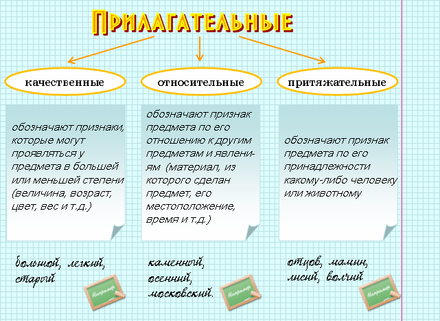
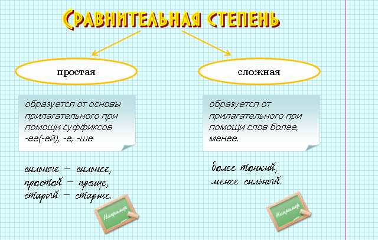
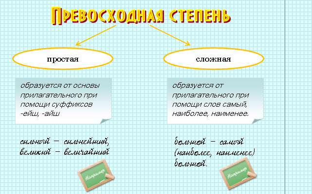

|
Имя прилагательное – это самостоятельная часть речи, обозначающая признак предмета и отвечающая на вопросы какой? чей? |

| Качественные | Относительные | Притяжательные | |||
 |
Имеют степени сравнения. Например: красивый – красивее – красивейший |
|
Не имеют степеней сравнения. | |
Не имеют степеней сравнения. |
|
Имеют полную и краткую формы. Например: красивый – красив (красива, красиво). |
|
Имеют только полную форму. Например: вечерний. |
|
Имеют только полную форму. Например: заячий |
|
Сочетаются с наречиями очень, вполне, совсем и т.п.
Например: очень красивый. |
|
Могут переходит в разряд качественных
прилагательных. Например: каменное сердце. |
|
Могут переходит в разряд качественных
прилагательных. Например: лисья хитрость. |
|
Способны к образованию отвлеченных существительных. Например: красота. |
 |
Разряд – это постоянный признак прилагательного. Род, число, падеж, полная или краткая форма и степень сравнения (у качественных) – непостоянные признаки. |


 |
весенние заморозки – весеннее солнце – весенних цветов. |
|
Чтобы правильно написать окончание прилагательного, нужно найти в предложении существительное, от которого оно зависит, и от этого существительного задать к прилагательному вопрос. Окончание вопроса подскажет, какое окончание писать. |
|
Мы встретились на цветочной поляне (прилагательное цветочной зависит от существительного поляне, поэтому задаем вопрос от него: на поляне (какой?) цветочной). |
|
Особые формы склонения имеют притяжательные прилагательные.
Прилагательные с суффиксом -ий имеют только краткую форму. Притяжательные прилагательные с суффиксами -ин(-ын), -ов(-ев) мужского и среднего рода имеют краткие и полные формы в родительном и дательном падежах. |